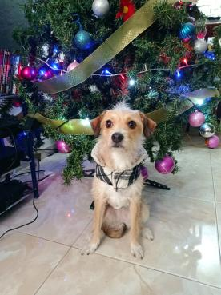
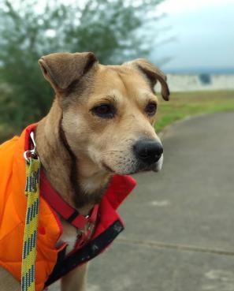
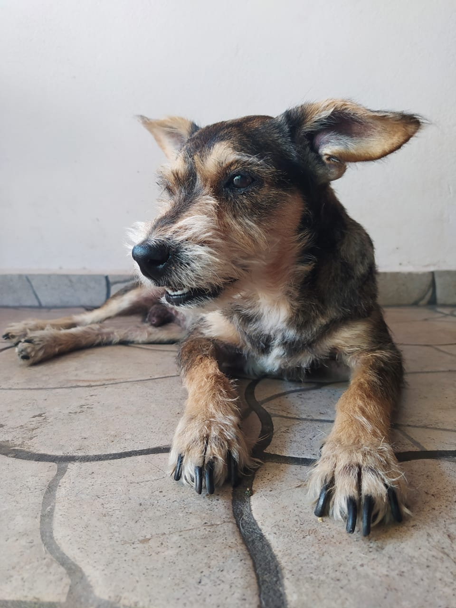
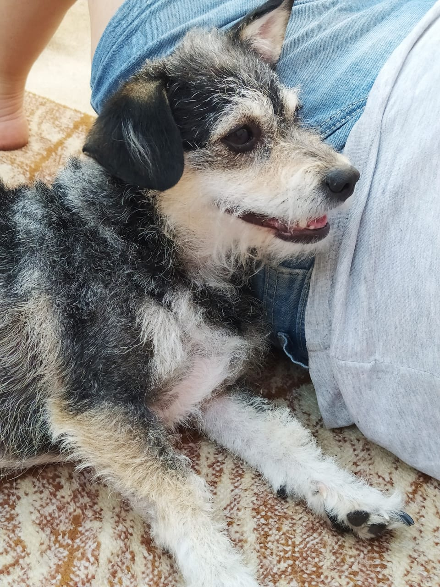
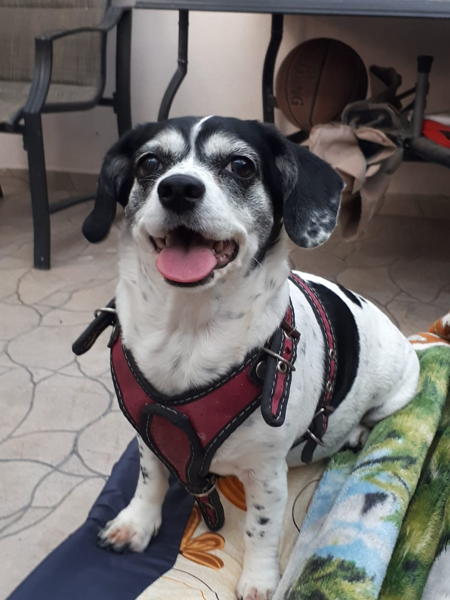

Listado de mascotas
Estos son nuestros amiguitos disponibles, puedes ver una foto de ellos y su información debajo.
Actualmente solo contamos con los siguientes cachorros:
- Cofistra

Raza Edad Talla Sexo Mestizo 2 años Chica Hembra
- Cofistro

Raza Edad Talla Sexo Mestizo 4 años Mediano Macho
- Bongorongo

Raza Edad Talla Sexo Schnauzer 12 años Chico Macho
- Yoli

Raza Edad Talla Sexo Mestizo 2 años Chica Hembra
- Cochi

Raza Edad Talla Sexo Mestizo 3 años Chica Hembra